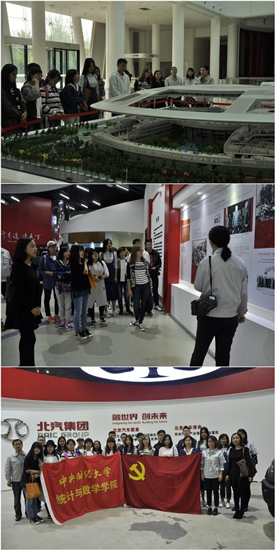
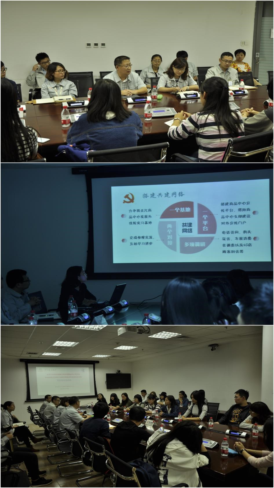
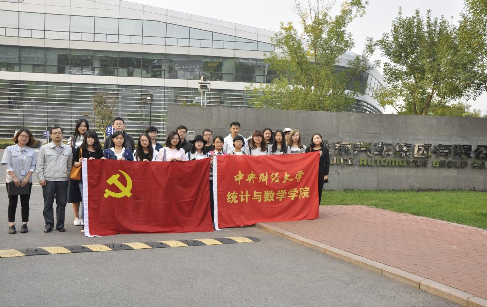

“沟通、互助、共进” ——记统计与数学学院2015级、2016级联合党支部与北汽股份党商品中心党支部“红色1+1”共建活动
按照北京市委教育工委《关于开展2016年北京高校红色“1＋1”活动的通知 》的精神，结合中央财经大学开展2016年红色“1+1”活动的契机，中央财经大学统计与数学学院党委下的2015级、2016级联合党支部与北汽股份党委北汽股份本部党委商品中心党支部取得紧密联系，开展两支部共建活动。9月30日下午，2015、2016本科生联合党支部党员、积极分子赴北汽股份有限公司本部参观学习，共建交流，受到了北汽股份商品中心支部的热情接待。
首先，北京汽车股份总裁办公室公司事务科员工带领党员、积极分子参观了北汽文化展，介绍了北汽的发展发展历史、组织架构以及主要业务。党员和积极分子通过学习，增加了对于北汽集团以及共建支部的认识，为两支部共建打下了良好的基础。同时，讲解员介绍了几款经典车型，同学们听得津津有味，纷纷拿出手机拍照留念。
接下来，两支部开展座谈交流活动。座谈会由北汽股份商品中心支部组织委员乔志伟主持。在会上，2015、2016级联合支部书记郭珺老师以“沟通，互助，共进”为主题从深挖共建资源、搭建共建网络、促进支部成长三方面介绍了统计与数学学院党委与本支部情况，说明了基本共建方案，并向北汽商品中心表达了支部共建的能力与信心。之后，北汽股份商品中心支部书记李部长对北京汽车股份有限公司以及商品中心的机构设置进行了介绍，并结合“车辆”的概念使党员和知识分子真正了解到车辆制造的流程以及商品中心的主要任务。通过两支部的介绍，双方都对彼此有了更深刻的了解。 在两支部针对支部共建内容以及开展方向进行了互动交流。李部长不仅提出希望2015、2016联合支部党员、积极分子运用所学知识在现有的“小样本”调研工作中进行协作，更提出双方支部可以致力于将“大数据”的方法引入车辆的开发设计中的新想法。郭珺老师也对支部共建网站的建设、北汽商品中心党员网上知识学习的设计安排等进行了详细讲解。同时，商品中心项目管理科科长表示，两支部还可以多利用节假日进行党支部发展、党员培训、积极分子培养方面的交流，互相吸取经验。希望与2015、2016联合支部党员、积极分子多多交流，共同成长。同时，北汽商品中心支部表示，在共建基础上，可以致力于建立两支部实习基地，接收我支部及统计与数学学院学生进入北汽商品中心实习。热烈、生动的交流激发了大家的思想，为支部共建提出了众多有益的建议。
良好的沟通、深入的了解以及目标的明确是共建持续开展的基础，经过此次共建交流活动，双方支部增进了对彼此的了解，明确了共建的内容和方向，增强了共建的信心，为共建活动打下了良好的基础。同时，支部学生也在此次共建中收获颇丰，对我支部党员、积极分子的培养大有裨益。
